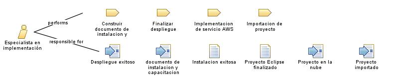

| Role: Especialista en implementación |
 |
|
 |
||
| Primary Performs | ||
|---|---|---|
| Modifies |
|
|
El especialista de implementación cumple tareas como:
Analizar negocio |
| Skills | El especialista de implementación tiene algunas habilidades como:
Conocimientos técnicos |
|---|---|
| Assignment Approaches | El especialista de implementación tiene diferentes enfoques de asignación tales como:
Documentar la información necesaria sobre el despliegue. |
El especialista de implementación:
Debe manejar términos que los usuarios pueda entender. |